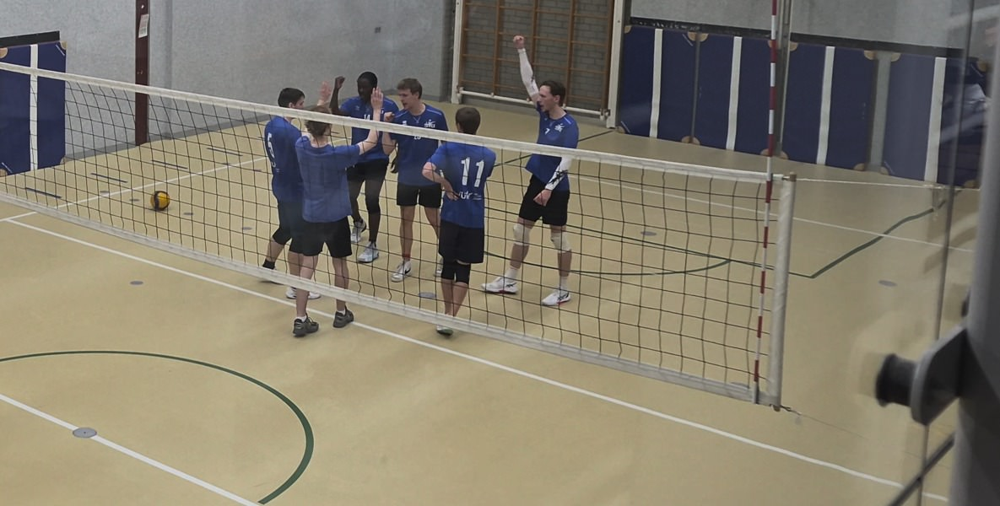

Basic Rules & Scoring

How Does It Work
Volleyball is played by two teams of six players separated by a net. The goal is simple: hit the ball over the net and make it land on the floor of the opponent's court, while stopping them from doing the same to you.
How to Win Points and Sets
Scoring System: Modern volleyball uses rally scoring, meaning every single play gives a point to someone, no matter who served.
Winning a Set: The first team to reach 25 points wins the set, but must lead by at least 2 points (for example: 25-23 or 26-24).
Winning the Match: Matches are usually played as the best of 5 sets, and the first team to win 3 sets takes the victory. If the score is tied at 2-2, the deciding 5th set is played to 15 points.
4 Rules for Touching the Ball
Rule 1 (3 Touches Max): Your team can only touch the ball up to 3 times before sending it over the net. The standard flow is pass, set, and spike.
Rule 2 (No Double Hits): You cannot hit the ball twice in a row. Another teammate must touch it before you can play it again.
Rule 3 (Any Body Part): You can hit the ball with your arms, chest, head, or feet. All hits must be clean; you cannot catch, lift, or throw the ball.
Rule 4 (Block Exception): If you jump at the net to block the opponent's hit and touch the ball, that touch does not count as one of your team's 3 hits. You can hit it again immediately.
Important Faults
Boundary Lines: If the ball hits any part of the boundary line, it is IN. It is only out if it lands completely outside the court lines.
Net Contact: You are not allowed to touch the net while playing the ball. Touching the net gives a point to the other team.
Center Line: You cannot step completely over the line under the net into the other team's court.
Serving: You must stay completely behind the back line when hitting your serve. If your foot touches or crosses the line while hitting the ball, it is a foot fault and the other team gets the point. If the ball touches the top of the net and lands on the other side, it remains in play.